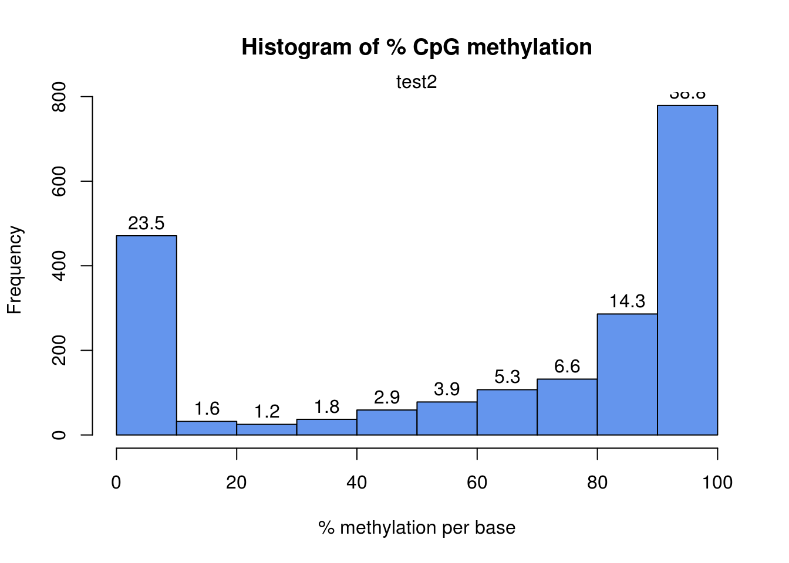
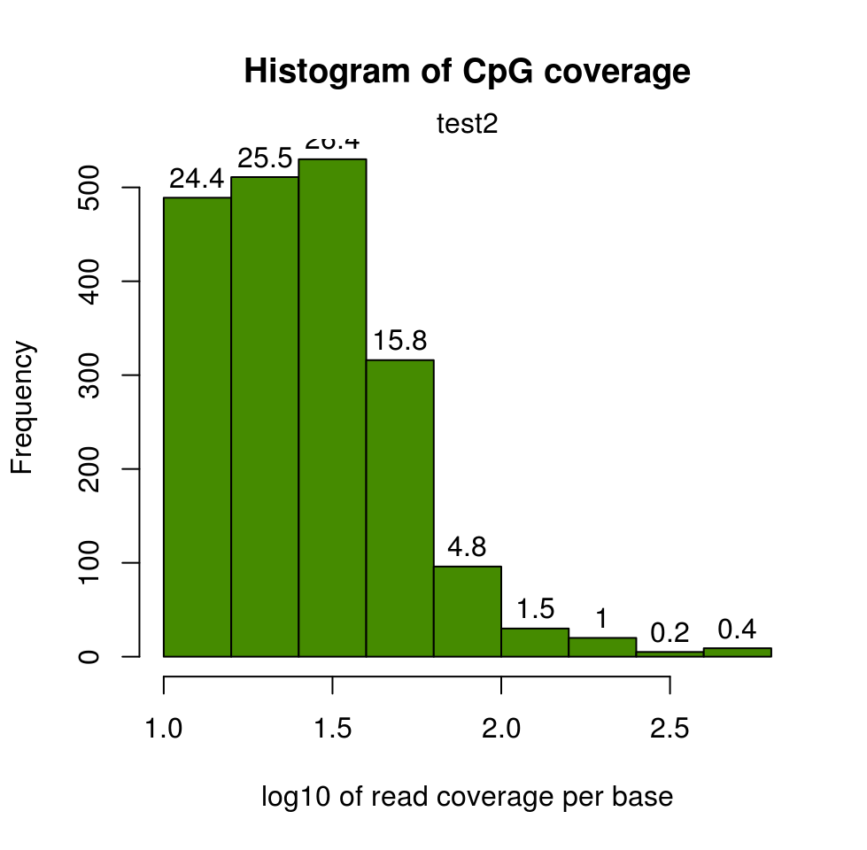
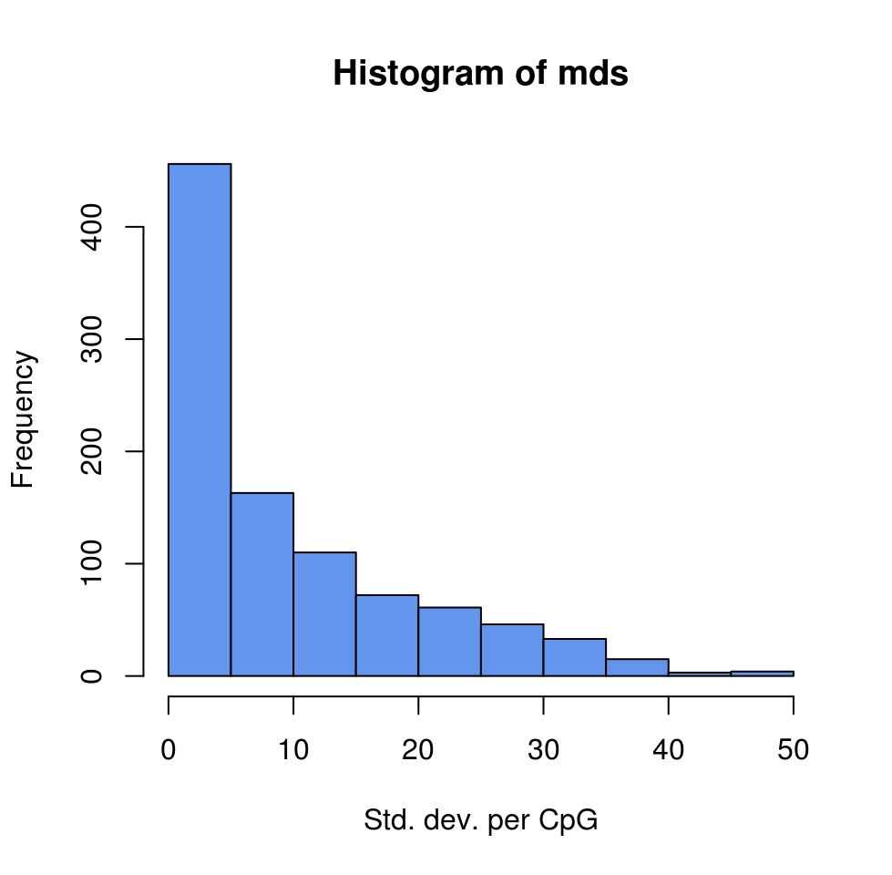
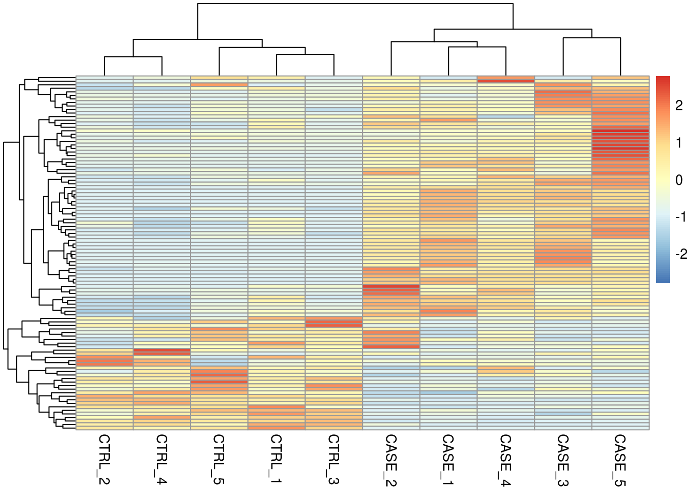
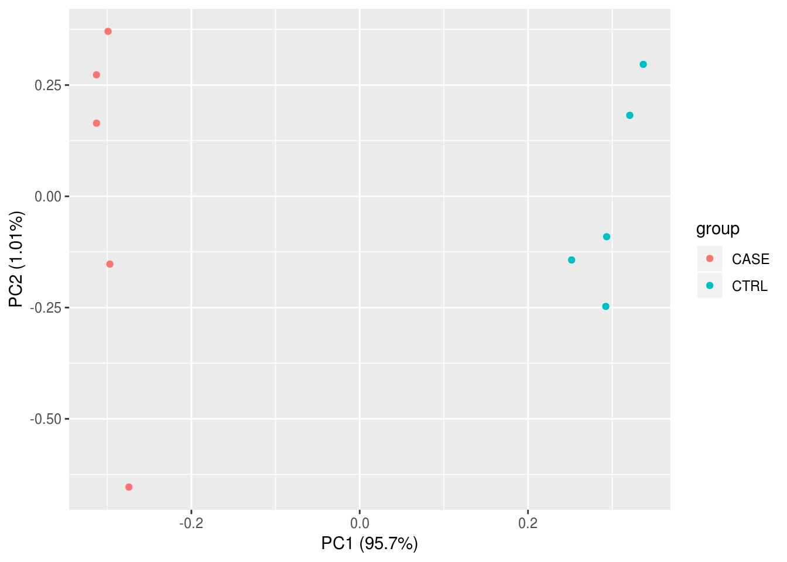

10.2 Data filtering and exploratory analysis
We assume that we start the analysis in R with the methylation call files. We will read those files in and carry out exploratory analysis, we will show how to filter bases or regions from the data and in what circumstances we might need to do so. We will use methylKit(Akalin et al. 2012) package for the bulk of the analysis.
10.2.1 Reading methylation call files
A typical methylation call file looks like this:
## chrBase chr base strand coverage freqC
## 1 chr21.9764539 chr21 9764539 R 12 25.00
## 2 chr21.9764513 chr21 9764513 R 12 0.00
## 3 chr21.9820622 chr21 9820622 F 13 0.00
## 4 chr21.9837545 chr21 9837545 F 11 0.00
## 5 chr21.9849022 chr21 9849022 F 124 72.58
## freqT
## 1 75.00
## 2 100.00
## 3 100.00
## 4 100.00
## 5 27.42Most of the time bisulfite sequencing experiments have test and control samples. The test samples can be from a disease tissue while the control samples can be from a healthy tissue. You can read a set of methylation call files that have test/control conditions giving treatment vector option. The treatment vector defines the sample groups and it is very important for the differential methylation analysis. For sake of subsequent analysis, file.list, sample.id and treatment option should have the same order. In the following example, first two files have the sample ids “test1” and “test2” and as determined by treatment vector they belong to the same group. The third and fourth files have sample ids “ctrl1” and “ctrl2” and they belong to the same group as indicated by the treatment vector. We will first get a list of file paths and have a look at the content.
library(methylKit)
file.list=list( system.file("extdata",
"test1.myCpG.txt", package = "methylKit"),
system.file("extdata",
"test2.myCpG.txt", package = "methylKit"),
system.file("extdata",
"control1.myCpG.txt", package = "methylKit"),
system.file("extdata",
"control2.myCpG.txt", package = "methylKit") )
file.list## [[1]]
## [1] "/Users/aakalin/Rlibs/methylKit/extdata/test1.myCpG.txt"
##
## [[2]]
## [1] "/Users/aakalin/Rlibs/methylKit/extdata/test2.myCpG.txt"
##
## [[3]]
## [1] "/Users/aakalin/Rlibs/methylKit/extdata/control1.myCpG.txt"
##
## [[4]]
## [1] "/Users/aakalin/Rlibs/methylKit/extdata/control2.myCpG.txt"As you can see file.list variable is a simple list of file paths. Each file contains methylation calls for a given sample. Now, we can read the files with methRead() function.
# read the files to a methylRawList object: myobj
myobj=methRead(file.list,
sample.id=list("test1","test2","ctrl1","ctrl2"),
assembly="hg18",
treatment=c(1,1,0,0),
context="CpG"
)tab-separated bedgraph like formats from Bismark methylation caller can also be read in by methylkit. In those cases, we have to provide either pipeline="bismarkCoverage" or pipeline="bismarkCytosineReport" to methRead function. In addition to the options we mentioned above,
any tab separated text file with a generic format can be read in using methylKit,
such as methylation ratio files from BSMAP.
See here for an example.
Before we move on, let us have a look at what kind of information is stored in myobj. This is technically a methylRawList object, which is essentially a list of methylRaw objects. These objects hold
the information for location of Cs, and methylated Cs and unmethylated Cs.
## inside the methylRawList object
length(myobj)## [1] 4head(myobj[[1]])## chr start end strand coverage numCs numTs
## 1 chr21 9764539 9764539 - 12 3 9
## 2 chr21 9764513 9764513 - 12 0 12
## 3 chr21 9820622 9820622 + 13 0 13
## 4 chr21 9837545 9837545 + 11 0 11
## 5 chr21 9849022 9849022 + 124 90 34
## 6 chr21 9853326 9853326 + 17 12 510.2.2 Further quality check
It is always a good idea to check how the data looks like before proceeding further. For example, the methylation values should have bimodal distribution generally. This can be checked via
getMethylationStats function. Normally, we should see a bimodal
distributions. Strong deviations from the bimodality may be due poor experimental quality, such as problems with bisulfite treatment.
getMethylationStats(myobj[[2]],plot=TRUE,both.strands=FALSE)
In addition, we might want to see coverage values. By default, methylkit handles bases with at least 10X coverage by that can be changed. The bases with unusually high coverage is usually alarming. It might indicate a PCR bias issue in the experimental procedure. The general coverage statistics can be checked with
getCoverageStats function.
getCoverageStats(myobj[[2]],plot=TRUE,both.strands=FALSE)
It might be useful to filter samples based on coverage. Particularly, if our samples are suffering from PCR bias it would be useful to discard bases with very high read coverage. Furthermore, we would also like to discard bases that have low read coverage, a high enough read coverage will increase the power of the statistical tests. The code below filters a methylRawList and discards bases that have coverage below 10X and also discards the bases that have more than 99.9th percentile of coverage in each sample.
filtered.myobj=filterByCoverage(myobj,lo.count=10,lo.perc=NULL,
hi.count=NULL,hi.perc=99.9)10.2.3 Merging samples into a single table
When we first read the files, each file is stored as its own entity. If we want compare samples in any way, we need to make a unified data structure that contains CpGs that are covered in most samples. The unite function creates a new object using the CpGs covered in each sample. This means
meth=unite(myobj, destrand=FALSE)Let us take a look at the data content of methylBase object:
head(meth)## chr start end strand coverage1 numCs1 numTs1
## 1 chr21 9853296 9853296 + 17 10 7
## 2 chr21 9853326 9853326 + 17 12 5
## 3 chr21 9860126 9860126 + 39 38 1
## 4 chr21 9906604 9906604 + 68 42 26
## 5 chr21 9906616 9906616 + 68 52 16
## 6 chr21 9906619 9906619 + 68 59 9
## coverage2 numCs2 numTs2 coverage3 numCs3 numTs3
## 1 333 268 65 18 16 2
## 2 329 249 79 16 14 2
## 3 83 78 5 83 83 0
## 4 111 97 14 23 18 5
## 5 111 104 7 23 14 9
## 6 111 109 2 22 18 4
## coverage4 numCs4 numTs4
## 1 395 341 54
## 2 379 284 95
## 3 41 40 1
## 4 37 33 4
## 5 37 27 10
## 6 37 29 8By default, unite function produces bases/regions covered in all samples. That requirement can be relaxed using “min.per.group” option in unite function.
# creates a methylBase object,
# where only CpGs covered with at least 1 sample per group will be returned
# there were two groups defined by the treatment vector,
# given during the creation of myobj: treatment=c(1,1,0,0)
meth.min=unite(myobj,min.per.group=1L)10.2.4 Filtering CpGs
We might need to filter the CpGs further before exploratory analysis or even before the downstream analysis such as differential methylation . For exploratory analysis, it is of general interest to see how samples relate to each other and we might want to remove CpGs that are not variable before doing that. Or we might remove Cs that are potentially C->T mutations. First, we show how to filter based on variation. Below, we extract percent methylation values from CpGs as a matrix. Calculate standard deviation for each CpG and filter based on standard deviation. We also plot the the distribution of per CpG standard deviations.
pm=percMethylation(meth) # get percent methylation matrix
mds=matrixStats::rowSds(pm) # calculate standard deviation of CpGs
head(meth[mds>20,])## chr start end strand coverage1 numCs1
## 11 chr21 9906681 9906681 + 21 12
## 12 chr21 9906694 9906694 + 21 9
## 13 chr21 9906700 9906700 + 13 6
## 14 chr21 9906714 9906714 + 14 3
## 18 chr21 9906873 9906873 + 12 8
## 23 chr21 9927527 9927527 + 17 5
## numTs1 coverage2 numCs2 numTs2 coverage3 numCs3
## 11 9 60 56 4 37 14
## 12 12 60 53 7 39 16
## 13 7 53 43 10 30 8
## 14 11 41 37 4 25 19
## 18 4 41 33 8 15 4
## 23 12 40 22 18 32 32
## numTs3 coverage4 numCs4 numTs4
## 11 23 26 11 15
## 12 23 26 15 11
## 13 22 23 10 13
## 14 6 21 19 2
## 18 11 22 7 15
## 23 0 14 11 3hist(mds,col="cornflowerblue",xlab="Std. dev. per CpG")
Now, let’s assume we know the locations of C->T mutations. These locations should be removed from the analysis as they do not represent
bisulfite treatment associated conversions. Mutation locations are
stored in a GRanges object, and we can use that to remove CpGs
overlapping with mutations. In order to do overlap operation, we will convert the methylKit object to a GRanges object and do the filtering with %over% function within [ ]. The returned object will still be a methylKit object.
library(GenomicRanges)
mut=GRanges(seqnames=c("chr21","chr21"),
ranges=IRanges(start=c(9853296, 9853326),
end=c( 9853296,9853326)))
# select CpGs that do not overlap with mutations
sub.meth=meth[! as(meth,"GRanges") %over% mut,]
nrow(meth)## [1] 963nrow(sub.meth)## [1] 96110.2.5 Clustering samples
Clustering is used for grouping data points by their similarity. It is a general concept that can be achieved by many different algorithms. In the context of DNA methylation we are trying to find samples that are similar to each other. For example, if we sequenced three heart samples and 4 liver samples, we would expect liver samples will be more similar to each other than heart samples on the DNA methylation space.
The following function will cluster the samples and draw a dendrogram. It will use correlation distance which is \(1-\rho\) , where \(\rho\) is the correlation coefficient between two pairs of samples. The cluster tree will be drawn using the “ward” method. This specific variant uses a “bottom up” approach: each data point starts in its own cluster, and pairs of clusters are merged as one moves up the hierarchy. In Ward’s method, two clusters are merged if the variance is minimized compared to other possible merge operations. This bottom up approach helps build the dendrogram showing the relationship between clusters.
clusterSamples(meth, dist="correlation", method="ward", plot=TRUE)
##
## Call:
## hclust(d = d, method = HCLUST.METHODS[hclust.method])
##
## Cluster method : ward.D
## Distance : pearson
## Number of objects: 4Setting the plot=FALSE will return a dendrogram object which can be manipulated by users or fed in to other user functions that can work with dendrograms.
hc = clusterSamples(meth, dist="correlation", method="ward", plot=FALSE)10.2.6 Principal component analysis
Principal component analysis (PCA) is a mathematical transformation of possibly(correlated) variables into a number of uncorrelated variables called principal components. The resulting components from this transformation is defined in such a way that the first principal component has the highest variance and accounts for as most of the variability in the data. The following function will plot a scree plot for importance of components.
PCASamples(meth, screeplot=TRUE)
We can also plot PC1 and PC2 axis and a scatter plot of our samples on those axis which will reveal how they cluster within these new dimensions. Similar to clustering dendrogram, we would like to see samples that are similar to be close to each other on the scatter plot. If they are not, it might indicate problems with the experiment such as batch effects.
pc=PCASamples(meth,obj.return = TRUE, adj.lim=c(1,1))
In this case, we also returned an object from the plotting function. this is the output of R prcomp function, which includes loadings and eigen vectors which might be useful. You can also do your own PCA analysis using percMethylation and prcomp. In the case above, the methylation matrix is transponsed. This allows us to compare distances between samples on the PCA scatterplot.
References
Akalin, Altuna, Matthias Kormaksson, Sheng Li, Francine E Garrett-Bakelman, Maria E Figueroa, Ari Melnick, and Christopher E Mason. 2012. “MethylKit: A Comprehensive R Package for the Analysis of Genome-Wide DNA Methylation Profiles.” Genome Biol. 13 (10): R87.